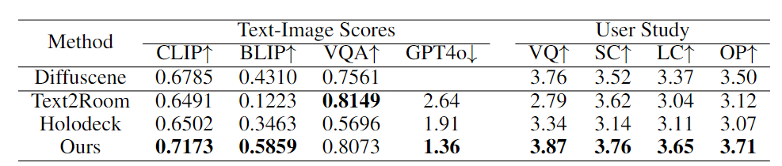

Abstract
Creating large-scale interactive 3D environments is crucial for Robotics and Embodied AI research, but generating diverse and realistic environments remains challenging. Current methods, such as manual design and procedural generation, are limited by human effort, predefined rules, and inadequate 3D spatial reasoning. Pre-trained 2D image generative models excel in scene and object configuration. To address these issues, we introduce ARCHITECT, a generative framework that creates complex 3D environments using diffusion-based 2D image inpainting. We employ visual perception models to extract objects from images and depth estimation models to convert 2D images into 3D space.
Despite challenges with camera parameters and depth scale, we use hierarchical inpainting to control these aspects. By rendering photo-realistic backgrounds and inpainting foregrounds with geometric cues, we inform the camera parameters, facilitating accurate 2D-to-3D conversion. Our pipeline's iterative inpainting process allows continuous generation of scene details, adapting from text, floor plans, or pre-arranged environments. Experimental results show ARCHITECT outperforms existing methods in creating realistic and complex environments, enhancing Embodied AI and robotics applications.

Our Pipeline
· We present ARCHITECT, a generative framework to create
diverse, realistic, and complex Embodied AI scenes.
diverse, realistic, and complex Embodied AI scenes.
· Leveraging 2D diffusion models,
ARCHITECT generates scenarios in an open-vocabulary manner.
ARCHITECT generates scenarios in an open-vocabulary manner.
· Here, we showcase two cases in detail:
an apartment and a grocery store.
an apartment and a grocery store.
· The Large Furniture scene can be inpainted and rendered iteratively by changing view, making the scene more diverse.
· The Small Object can add more details and interactive objects to the scene.
Comparisons
We compare ARCHITECT with other methods:
- Household Scenes:
- Living Room
- Dining Room
- Living Room
- Dining Room
- Non-household Scenes:
- Hospital Room
- Hair Salon
- Video Store
- Casino
- Children Room
- Shoe Store
- Hospital Room
- Hair Salon
- Video Store
- Casino
- Children Room
- Shoe Store
More details are shown in our paper.
Small Object Placement
ARCHITECT can place interactable small objects inside large furniture. Generating diverse and interactable scene for Embodied AI tasks.
Experiment & Metrix
